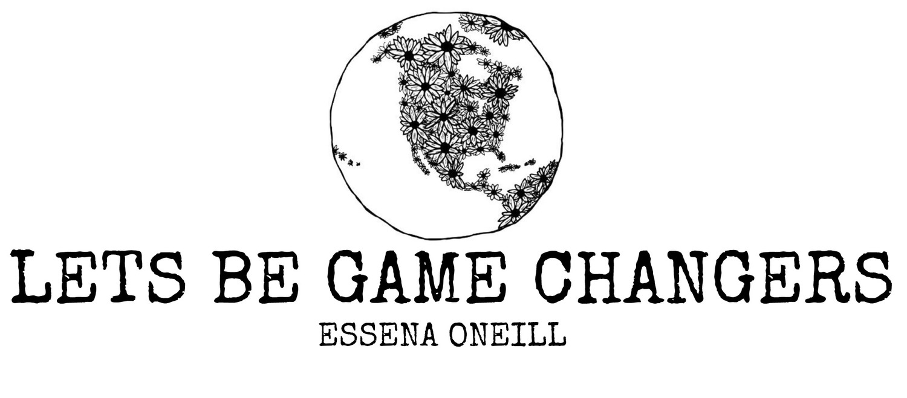

To begin, let’s look at the aim of Essena’s site. The fourth stasis of policy is clear; the title of the site itself (ignoring is blatant disregard for proper punctuation) is a call to action:

Essena is addressing her audience, asking them to be “game changers.” But who is her audience? What does it mean? What is the problem, and how is it being addressed? How did she get to the fourth stasis? To answer that question, let’s analyze the website’s primary claim and call to action:
“I'm over all the mainstream distractions that cloud our lives - celebrity culture, hot useless goop (some refer to this as gossip) and endless advertisements. I want to live in a world that encourages creative ideas, innovation and authentic self expression. This site is a base for my own self expression (writing) and how I wish to share relevant core messages that enriched my life. I don't have all the answers and I don't want them. I want to feel, question and create. I used to live in this world, which ironically I'm told is the 'real world' - a world dictated by screens, numbers, money and superficial ideas of happiness. I'm over people and companies that just want to sell, not create out of passion and purpose. Mainstream media, mainstream thoughts and mainstream fear - I think all of it is limiting our real potential here on earth.
So let's not pay attention to it all, it's useless and just distracting. Let's live in the world we want for each other. So... let's change stuff up. Let's question things, learn more and move away from social approval. Each one of us is powerful enough to create great changes... let us just begin with one.”
The first stasis is clearly stated in introductory sentence: the fact of the matter and verifiable issue is the distracted mainstream culture of today’s online social media-driven world. This issue is one that is held commonly among social media users. The market-driven advertisement industry is also a significant issue in mainstream culture today as well. She claims that her core intent is to “motivate anyone reading/viewing/listening/watching (you the individual with individual goals and passions and dreams and talents) to be your own game changer.”
Essena then goes on to paint the picture of a world that “encourages creative ideas, innovation and authentic self expression” and claims that the site is a grounds for her to do so for herself. This statement implicitly suggests that social media and online world of youth culture is what has prevented her from achieving that. However, she continues to insist that she doesn't want her personal convictions (particularly about social media) to be forced upon others. Here, at the second stasis of definition, her argument is clearly stalled; there is no verifiable, exact definition of the problem, and its nature cannot be fully agreed upon, regardless of audience. Therefore, it would seem that her argument cannot move forward to the third stasis of assessing quality. But if we consider Fahnstock and Secor's assertion that a rhetor's attention to a particular stasis reveals details about the intended audience and context, we can further analyze the situation
This consideration and high focus on the nature of the issue at the second stasis reveals Essena's attention to a particular audience: the individuals on social media who recognize the problem, but don't realize the nature of social media's "behind the scenes." Through her blog posts and videos, Essena is trying to explain the nature of the "fakeness" and danger of social media to an audience for whom its definition might be entirely different. This is why she states that for herself, the definition of the problem was her obsession with "likes" and social approval," but that it might be different for the reader. She intends for the context and audience's position to become the basis for individual evaluation of the quality of the issue at hand.
In this way, though the issue might seem to be stalled at the second stasis, it actually is a keen use of rhetorical questioning that leads the reader to consider action on his or her own definition and policy. Despite the criticism, Essena's message has seen widespread success and response from many people who have connected with its message and found value in it. This was Essena's goal from the start. She effectively achieved what she set out to do by accurately appealing to her intended audience.